Global Initiative on Academic Network (GIAN)
Cloud Data Center Service Provisioning: Theoretical and Practical Approaches, Jan. 29-Feb. 9, 2018
The objective of the course was to enable the participants to have a thorough knowledge and practical experiences in advanced resource management solutions and scheduling techniques for Cloud computing. The course examines in depth the critical resource management and scheduling features such as efficiency, scalability, reliability, energy conservation, and environmental impact as well as mechanisms for the implementation of resource management and scheduling policies. Thus this course enhances the participants knowledge of the key functions in Cloud computing resource management and scheduling as well as equips the participants with the skills and knowledge required for a career in Cloud computing or Cloud computing research and development. The knowledge gained in this course will enable attendees to perform deep and wide analysis of issues related to virtualized resources optimization, implement appropriate resource provisioning techniques and perform high quality research in the area.
Resource Person: Jemal H. Abawajy, PhD, SMIEEE
(Director, Distributed Systems and Security Cluster Faculty of Science, Engineering and Built Environment, Deakin University Waurn Ponds Campus, Locked Bag 20000, Geelong, VIC 3220)
JEMAL H. ABAWAJY is a full professor at Faculty of Science, Engineering and Built Environment, Deakin University, Australia. He is a Senior Member of IEEE Society; IEEE Technical Committee on Scalable Computing (TCSC); IEEE Technical Committee on Dependable Computing and Fault Tolerance and IEEE Communication Society. His leadership is extensive spanning industrial, academic and professional areas (e.g., IEEE Technical Committee on Scalable Computing, Academic Board, Faculty Board and Research Integrity Advisory Group). Professor Abawajy is currently the Director of the Distributing System and Security Cluster. He has been actively involved in the organization of more than 300 national and international conferences in various capacity including chair, general co-chair, vice-chair, best paper award chair, publication chair, session chair and program committee. Professor Abawajy has served on the editorial-board of numerous international journals and currently serving as associate editor of the IEEE Transaction on Cloud Computing, International Journal of Big Data Intelligence and International Journal of Parallel, Emergent and Distributed Systems. He has also guest edited many special issue journals. Professor Abawajy is actively involved in funded research supervising large number of PhD students, postdoctoral, research assistants and visiting scholar in the area of Cloud Computing and Big Data. He is the author/co–author of five books, more than 250 papers in conferences, book chapters and journals such as IEEE Transactions on Computers and IEEE Transactions on Fuzzy Systems. He also edited 10 conference volumes. Professor Abawajy has delivered numerous keynote addresses, invited seminars, and media briefings (e.g., Voice of America's English Radio).
Lecture Schedule and Power Point Presentations(PPTs) DownloadInternational Research Workshop in Cloud Computing (RWCC - 2016)
3rd International Research Workshop in Cloud Computing (RWCC-2016), December 22-23, 2016
School of Computer and Systems Sciences (SCSS) organized 3rd International Research Workshop in Cloud Computing (RWCC-2016) on December 22-23, 2016 at Convention Centre, JNU. This was the third yearly workshop consecutively. Previous two workshops focused more on Cloud aspect and Cloud related research issues. The focus of RWCC-2016 was more on IoT related research and technologies as the Cloud world is evolving towards IoT.
Though, Cloud computing is here since last many years, still the discipline is not yet saturated. As it has become a business model, numerous IT vendors promise to offer computation, storage, and application hosting services. Also to provide coverage in several continents, a service level agreements (SLA) is executed for their services. While these “clouds” are the natural evolution of traditional data centers, they are distinguished by exposing resources (computation, data and applications) as standard-based Web Services and following a “utility” pricing model where customers are charged based on their utilization of computational resources, storage, and transfer of data. They offer subscription-based access to infrastructure, platforms, and applications.
Researchers from India and abroad attended and demonstrated their research pursuits in the area of Cloud Computing and IoT related technologies. The first day of the Research Workshop was equipped with many distinguished talks from Academia and Industry. Prof. Rajkumar Buyya, Professor of Computer Science and Software Engineering and Director of the Cloud Computing and Distributed Systems (CLOUDS) Laboratory at the University of Melbourne, Australia gave a keynote address on “New Frontiers in Cloud Computing for Big Data and Internet-of-Things (IoT) Applications”. It was followed by a talk of a well-known researcher and Professor in Economics Prof. Krishnendu Ghosh Dastidar, Centre for Economic Studies and Planning, JNU, who spoke on “On some aspects of scoring auctions”. This was very relevant as the cloud resource provisioning highly apply Auction/Bargaining. The post lunch session on December 22, 2016 had three important talks by renowned researchers. Prof. Debashis Saha, MIS and Computer Science Group, Indian Institute of Management (IIM) Calcutta, delivered a keynote on “Emerging Role of Cloud Computing in IoT-enabled Industry 4.0”. Dr. Karthik Bharadwaj, CEO and Founder, meghasevA Pvt Ltd, Sydney, Australia, spoke on “The Application of Cloud Computing and Internet-of-Things (IoT) in Energy Conservation and Efficient Energy Utilization”. Dr. Satish Narayana Srirama, Head of Mobile & Cloud Lab, Institute of Computer Science, University of Tartu, Estonia delivered on “Mobile and Cloud Centric Internet of Things”.
The Next Day of the workshop started with the keynote by Dr. Geetha Manjunath, who is heading the Data Analytics Research Group of Xerox Research Centre, Banglore. She gave the industry touch and correlated Cloud and Big Data speaking on “Cloud requirements for Big Data Applications”. The next to speak was Prof. Jemal H. Abawajy, Professor & Director, Distributed System and Security Research Cluster, Deakin University, Australia. He delivered a keynote on “Energy-efficient cloud data-centre scheduling algorithm”. A young professor from Sweden, Dr. Karan Mitra, Luleå University of Technology, Sweden spoke on “A Mobile Cloud Computing System and Probabilistic Cloud QoS Diagnosis and Prediction”. Hands on training session was organized by Mr. Anupinder Singh of Superwits Academy, Ludhiana, India. He started with an Introduction to CloudSim and its architecture followed by simulating various scenarios using CLoudsim. In this, he elaborated on how to test various research models developed for Cloud using CloudSim.
The Key Speakers of the Workshop were:- Prof. Rajkumar Buyya, University of Melbourne, Australia
- Prof. Jemal H. Abawajy, Deakin University, Australia
- Prof. Debashsis Saha, Indian Institute of Management, Calcutta
- Prof. Krishnendu Ghosh Dastidar, Centre for Economic Studies and Planning, JNU
- Mrs. Geetha Manjunath, Data Analytics Research, Xerox Research Centre, India
- Mr. Satish Narayana Srirama, Head of Mobile & Cloud Lab Institute of Computer Science University of Tartu, Estonia
- Mr. Karthik Bharadwaj, CEO and Founder, meghasevA Pvt Ltd, Sydney, Australia
- Mr. Karan Mitra, Assistant Professor at Luleå University of Technology, Sweden
- Mr. Anupinder Singh, Superwits Academy, Ludhiana, India
Prof. Rajkumar Buyya
Prof. Jemal H. Abawajy
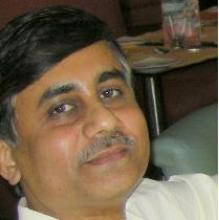Prof. Debashsis Saha
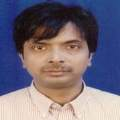Prof. Krishnendu Ghosh Dastidar
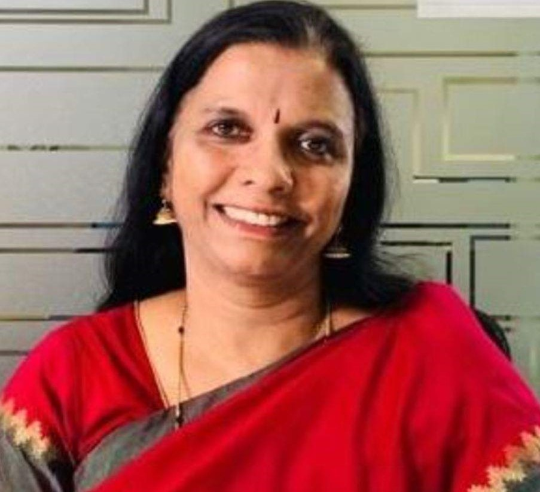Mrs. Geetha Manjunath
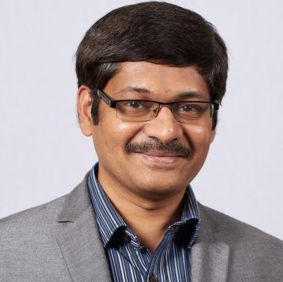Mr. Satish Narayana Srirama
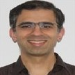Mr. Karthik Bharadwaj
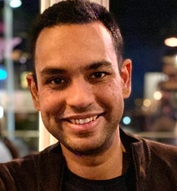Mr. Karan Mitra
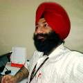Mr. Anupinder Singh
International Research Workshop in Cloud Computing (RWCC - 2015)
2nd International Research Workshop in Cloud Computing (RWCC-2015), December 22-23, 2015
Consequent to last year, School of Computer and Systems Sciences organized 2nd International Research Workshop in Cloud Computing (RWCC-2015) on December 22-23, 2015 at Convention Centre, JNU.
Cloud computing has recently emerged as one of the buzzwords in the IT industry. Numerous IT vendors are promising to offer computation, storage, and application hosting services and to provide coverage in several continents, offering Service Level Agreements (SLA) backed performance and uptime promises for their services. While these “clouds” are the natural evolution of traditional data centers, they are distinguished by exposing resources (computation, data, and applications) as standards-based Web services and following a “utility” pricing model where customers are charged based on their utilization of computational resources, storage, and transfer of data. They offer subscription-based access to infrastructure, platforms, and applications that are popularly referred to as IaaS (Infrastructure as a Service), PaaS (Platformas a Service), and SaaS (Software as a Service).
Researchers from India and abroad attended and demonstrated their research pursuits in the area of Cloud Computing. First day of the Workshop was delighted with few distinguished talks. Prof. Rajkumar Buyya, Professor of Computer Science and Software Engineering and Director of the Cloud Computing and Distributed Systems (CLOUDS) Laboratory at the University of Melbourne, Australia gave a keynote address on "Innovative Solutions for Deployment of Big Data Applications on Computing Clouds". Dr. K Raghavendra, Senior Scientist, ISRO, Hyderabad, India, demonstrated on some Cloud computing Programming Models, Thread, Task and MapReduce. Dr. Yogesh Simmhan, Indian Institute of Science, Bangalore, India delivered on "Leveraging Cloud Computing for Big Data Platforms" followed by a talk on "Issues and Challenges in Cloud Dependability Modeling" by Prof. A.K. Tripathi, Indian Institute of Technology BHU, Varanasi, India.
Next Day of the workshop opened with a talk by Dr. Bhuvan Urgaonkar, Penn State University, USA on "Reducing Peak Power Costs in Cloud Data Centers". Hands on training session was organized by Mr. Anupinder Singh of Superwits Academy, Ludhiana, India. First he gave an Introduction to CloudSim and its architecture followed by simulating various scenarios using CLoudsim. In this, he elaborated on how to test various research models developed for Cloud using CloudSim.
Overall, the topics that have been covered in the workshop are as follows:
- Technologies for creating Cloud Computing Environment on a Network of Computers
- Tools for building Cloud applications
- Initiating innovative R&D projects in Cloud computing
- Prof. Rajkumar Buyya, University of Melbourne, Australia
- Prof. Anil Kumar Tripathi, Indian Institute of Technology, Banaras Hindu University, Varanasi, India
- Dr. K Raghavendra, Senior Scientist, ISRO, Hyderabad, India
- Dr. Yogesh Simmhan, Indian Institute of Science, Bangalore, India
- Dr. Bhuvan Urgaonkar, Penn State University, USA
- Mr. Anupinder Singh, Superwits Academy, Ludhiana, India
Prof. Rajkumar Buyya
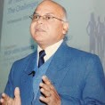Prof. Anil Kumar Tripathi
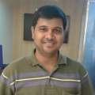Dr. K Raghavendra
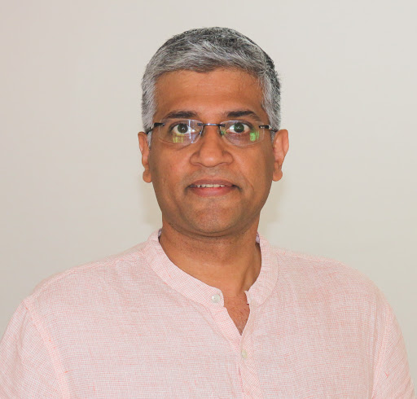Dr. Yogesh Simmhan
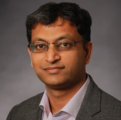Dr. Bhuvan Urgaonkar
Mr. Anupinder Singh
International Research Workshop in Cloud Computing (RWCC - 2014)
1st International Research Workshop in Cloud Computing (RWCC-2014), September 26-27, 2014
School of Computer and Systems Sciences organized an International Research Workshop in Cloud Computing (RWCC-2014) on September 26-27, 2014 at Convention Centre, JNU. The workshop was meant to provide an opportunity to the participants to upgrade their knowledge in recent advances in Information Technology with special focus on research issues in Cloud Computing.
Eminent Researchers from India and abroad delivered the talks and demonstrated their research work in the area of Cloud Computing. Prof. Rajkumar Buyya, Professor of Computer Science and Software Engineering and Director of the Cloud Computing and Distributed Systems (CLOUDS) Laboratory at the University of Melbourne, Australia, gave a keynote address on "Market-Oriented Cloud Computing & Big Data Applications". Dr. Sanjiva Dubey, who is GTS Service Delivery Executive, Asia Pacific, IBM Global, discussed about "Managerial Challenges and Strategies for Cloud Adoption". Prof. Jemal H. Abawajy, Professor at School of Information Technology, Deakin University, Australia, discussed about Security issues in Cloud. Prof. Rammohan Rao Kotagiri, Professor of Computer Science, University of Melbourne, Australia deliberated upon "New Trends in Data Mining and Cloud-based Big Data". The workshop also had a practicing Advocate of Supreme Court of India, Mr. Pavan Duggal who has made an immense impact with an international reputation as an expert and authority on Cyberlaw and E-Commerce law. He deliberated upon the legal aspects in Cloud and the use and misuse of Indian laws in Cloud Computing. Prof. Anil Kumar Tripathi, a renowned Professor in the Department of Computer Engineering, Indian Institute of Technology, Banaras Hindu University, Varanasi, India, spoke about the "Issues, Challenges and Problems in Dealing with the Non Functional Aspects in Cloud Computing Investigative Research".
Next day of the workshop had a complete lab session handled by Dr. K. Raghavendra, Scientist at ADRIN, Department of Space, Govt. of India and Mr. Rajinder Sandhu of Gurunanak Dev University, Amritsar. About 150 delegates from India and abroad participated in the workshop. Briefly, the topics that have been covered in the workshop are as follows.
- Technologies for creating Cloud Computing Environment on a Network of Computers
- Tools for building Cloud applications
- Initiating innovative R&D projects in Cloud computing
- Prof. Rajkumar Buyya, University of Melbourne, Australia
- Prof. Anil Kumar Tripathi, Indian Institute of Technology, Banaras Hindu University, Varanasi, India
- Prof. Jemal H. Abawajy, Deakin University, Australia
- Pavan Duggal, Practicing Advocate of Supreme Court of India
- Dr. Sanjiva Dubey, GTS Service Delivery Executive, Asia Pacific IBM Global
- Mr. Sri K. Raghavendra, Scientist,ADRIN, Department of Space, Govt. of India
Prof. Rajkumar Buyya
Prof. Anil Kumar Tripathi
Prof. Jemal H. Abawajy
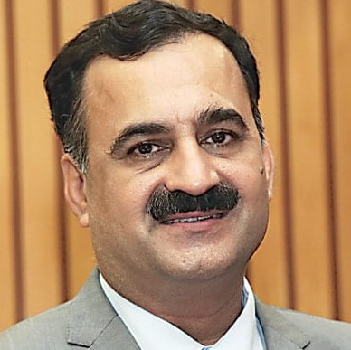Pavan Duggal
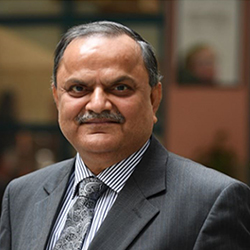Dr. Sanjiva Dubey

Mr. Sri K. Raghavendr
National Conference on Methods and Models in Computing (NCM2C - 2006)
National Conference on Methods and Models in Computing (NCM2C - 2006), 18-19 December, 2006
A National Conference on Methods and Models in Computing (NCM2C) was organized by the the Parallel/distributed Systems Group on 18-19 December, 2006 at School of Computer and Systems Sciences, JNU. The objective of NCM2C was to provide a forum to the researchers of all the disciplines, especially in Computer Science, to deliberate on their models with the scientist across India. The scope and theme of the conference is made wide enough to deliberate and explore interdisciplinary research by learning the development in other disciplines. NCM2C - 2006 was a humble effort to gather prominent researchers for interdisciplinary evolution of researches.
The areas covered in the conference were:
- Databases
- Data Warehouses and Mining,
- Software Engineering
- Artificial Intelligence
- Computational Intelligence
- Computational Complexity & Optimization
- Modeling and Simulation
- Programming Languages
- Embedded Systems
- Wireless Mobile Computing and Computer Networks Security
- Parallel and Distributed Computing Multimedia and Graphics
- Prof. Suresh Chandra, Indian Institute of Technology, Delhi
- Prof. Anil Kumar Tripathi, Indian Institute of Technology, Banaras Hindu University, Varanasi, India
- Prof. Y. Narahari I, ISc, Banglore